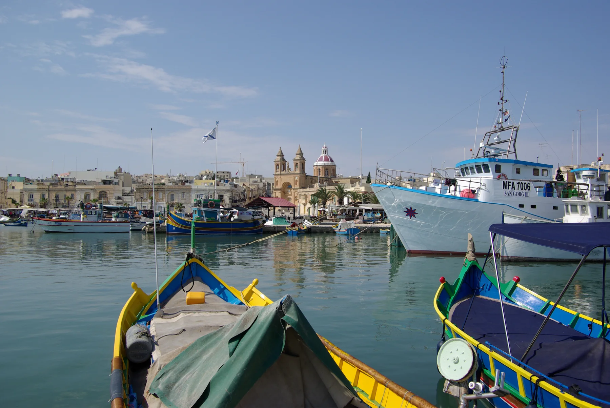

Boats, restaurants and market activity create a distinct edge. They do not prove a home's view, quietness or walking distance.
MARSAXLOKK · SOUTH-EAST MALTAHarbour life.
Harbour life.
Street reality.
Marsaxlokk's waterfront is the memorable frame. A home still has to work at its exact address, on an ordinary weekday and when the market changes the village rhythm.

READ THE VILLAGE IN LAYERS
The bay is one context, not every address.
Marsaxlokk is its own locality. The promenade, harbour activity, residential streets and the wider Delimara side should not be flattened into one waterfront promise.
Check the exact street for gradients, pavements, deliveries, parking and the walk back from everyday errands.
Coast and terrain references require separate access evidence. They are not automatic amenities for every Marsaxlokk address.
Useful orientation, separate localities. Their services and coastlines are never silently relabelled as Marsaxlokk.
A VILLAGE WITH DIFFERENT SPEEDS
Test the day you will actually live.
The Local Council describes a settlement shaped by its harbour. Malta Public Transport also publishes Sunday-market diversions. That makes timing part of a serious viewing, not a footnote.
Walk the practical route
Start at the real entrance and test groceries, the clinic direction and the bus stop you would genuinely use.
Expect a changed circulation pattern
Use the live transport updates. No permanent route, frequency or market timetable is frozen into this guide.
Return after the waterfront changes pace
Check lighting, crossings, noise and the final metres at the property's own street rather than the locality centroid.
EVERYDAY ANCHORS
Three useful checks before you shortlist.
These sources establish current operator or public-service references. Opening hours, appointments, stock and departures stay on the live pages.
SPAR Marsaxlokk
SPAR lists a single-level neighbourhood store at the village entrance. Compare the real carrying route from each home.
Check the store's current information ↗M'Xlokk Community Clinic
Primary HealthCare lists the clinic on Triq tat-Trinċiera. Services and appointments vary; confirm what is available before relying on a visit.
Open the current clinic directory ↗Routes and diversions
The operator currently returns Marsaxlokk route and stop results, plus Sunday-market updates. Use the live journey tools for your date.
Plan with Malta Public Transport ↗TWO OPERATOR-VERIFIED TABLES
Food with an address, not a ranking.
Both venues publish their own Marsaxlokk waterfront address and broad menu direction. They are examples for exploration, not 2906 recommendations.
L'Arkati
The operator describes Mediterranean fish and seafood in a restored former fishmonger shop. Menu, catch and opening details can change.
See the venue's current information ↗La Nostra Padrona
The operator lists Italian seafood, pasta and grilled fish on the harbour. Check the current menu, hours and booking conditions directly.
See the venue's current information ↗Open the village and harbour context only when you need it.
The map is a broad OpenStreetMap view. It deliberately marks no listing, route, boundary, waterfront guarantee or swimming access and loads only after your click.
Marsaxlokk Local Council · Address Registrar · Primary HealthCare · Malta Public Transport route search · service updates · SPAR Malta · L'Arkati · La Nostra Padrona. Volatile details such as hours, appointments, menus, departures and diversions remain live checks.